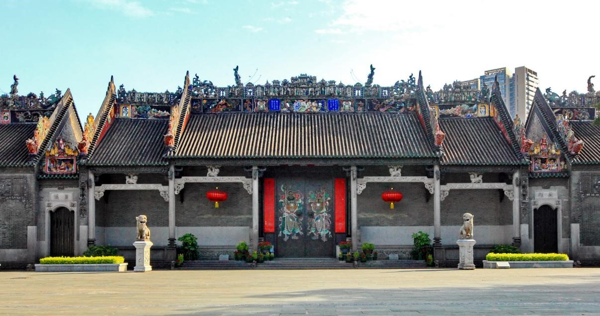

概要・歴史
陳家祠は清の光緒14（1888）年に建設が始まり、７年の歳月をかけて光緒20（1894）年に落成した。その建築構造は突出した嶺南建築様式の特徴を有し、 「三進三路六院八廊」と要約される。「聚賢堂」は陳家祠の中軸線にある主殿堂で、建築群全体の中心に当たり、建設当初は一族の集会に使われていたが、後に宗祠となり、両側の書房は書院として使用された。 陳家祠の中で最も人目を引くのは間違いなく、祠堂の屋根や広間、中庭、廊下に配置された石灰塑像と陶塑像だ。大小入り交じって情趣に富み、それぞれが生き生きとして色とりどりで美しく、見切れないほどである。 モチーフは花鳥や瑞獣、あずまや、楼閣などのほか、『三国演義』や『水滸伝』など歴史文学中の人物像もある。 著名な文学者・歴史学者・政治家である郭沫若氏が陳家祠を訪れた時には、その豪華絢爛な建築装飾芸術に感服し、 「天工人可代、人工天不如（天の作ったものは人が代わることができ、人が作ったものは天もかなわない）」 という詩を作り賞賛した。Learning more 予約・基本情報
| 住所: | 広東省広州市荔湾区中山七路恩龍里34号 |
| アクセス: | 地下鉄1号線(陳家祠)駅から徒歩1分 |
| 駐車場: | なし |
| 営業時間: | 8時30分〜17時 |
| 所要時間目安: | 2時間 |
| 入場料: |
入場に際しパスポートが必要 |
| 入場時の注意事項: | 服装はカジュアル可。カメラ持込可。ビデオ持込可。オーディオガイドあり(有料、中国語/英語) |
| 事前予約: | 個人なら不要 |